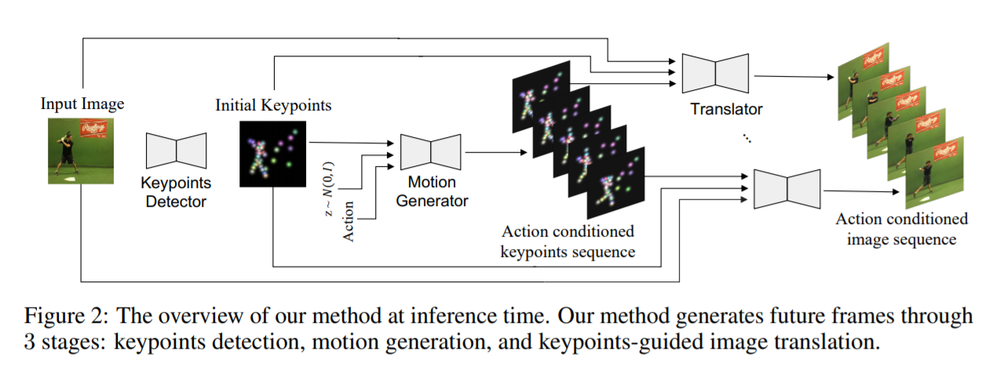
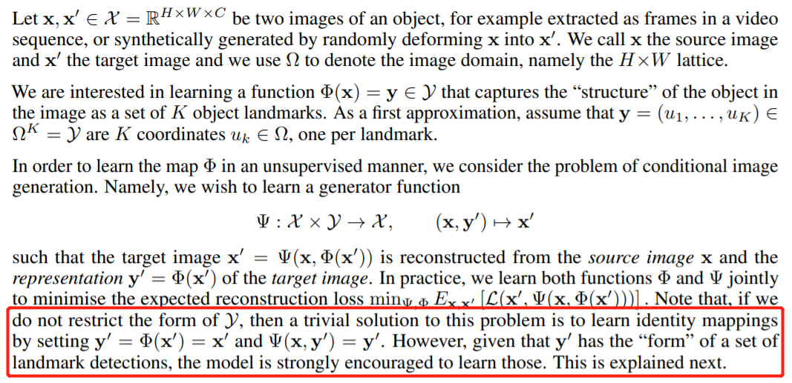
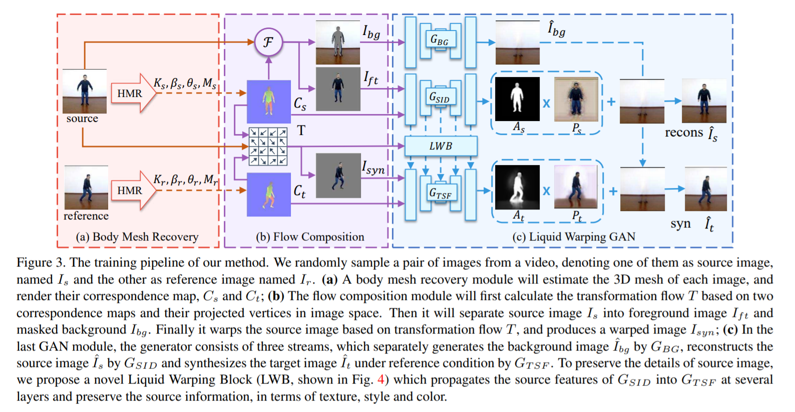
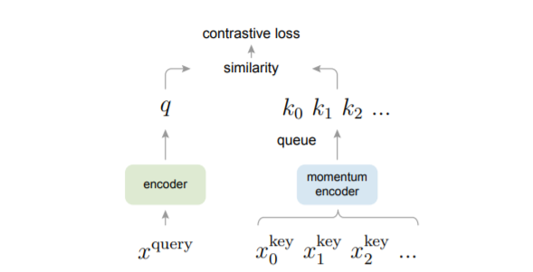
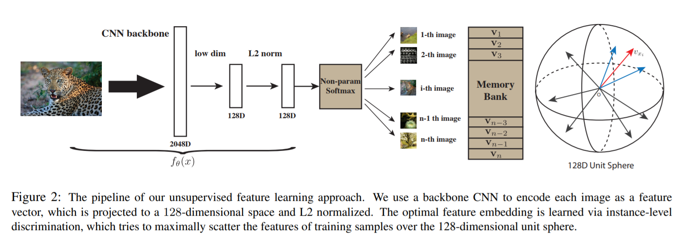
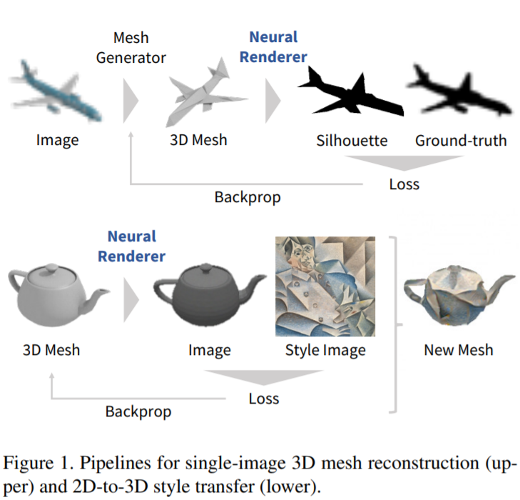
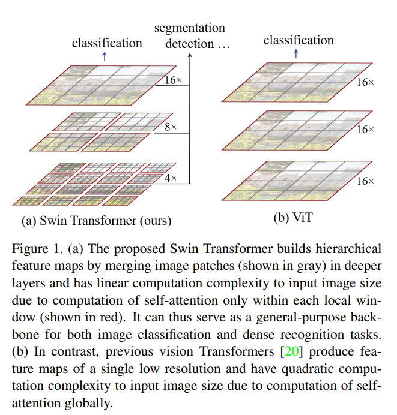
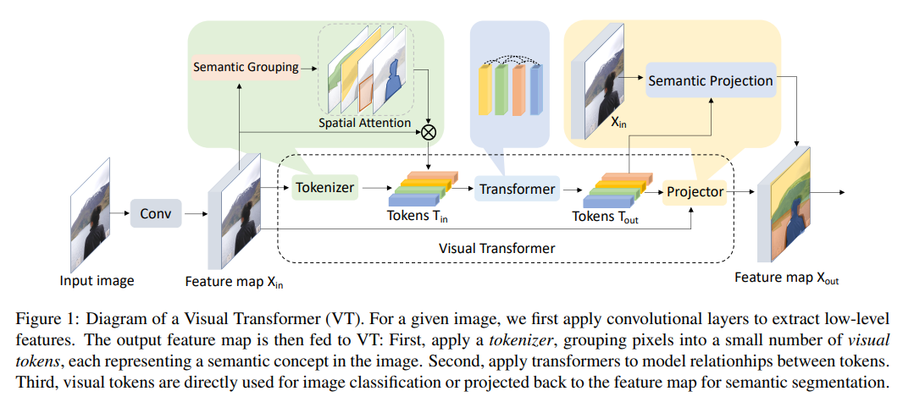

Blog Event-Based Vision
Contents
Event-based vision
advantages
- Event cameras have several advantages over traditional cameras: a latency in the order of
microseconds, a
very high dynamic range (140 dB compared to 60 dB of traditional cameras), and very low power
consumption
(10mW vs 1.5W of traditional cameras). Moreover, since all pixels capture light independently,
such sensors
do not suffer from motion blur.
[TPAMI 2020] Event-based Vision: A Survey [pdf]
Guillermo Gallego, Tobi Delbruck, Garrick Orchard, Chiara Bartolozzi, Brian Taba, Andrea Censi, Stefan
Leutenegger, Andrew Davison, Joerg Conradt, Kostas Daniilidis, Davide Scaramuzza
[CVPR 2020] EventCap: Monocular 3D Capture of High-Speed Human Motions using an Event Camera [pdf]
Lan Xu, Weipeng Xu, Vladislav Golyanik, Marc Habermann, Lu Fang, Christian Theobalt
[ECCV 2020] Spike-FlowNet: Event-based Optical Flow Estimation with Energy-Efficient Hybrid Neural Networks
[pdf]
Chankyu Lee, Adarsh Kumar Kosta, Alex Zihao Zhu, Kenneth Chaney, Kostas Daniilidis, Kaushik Roy
- SNN decodes event streams and ANN encodes optical flow. Simplest IF neuron model is used in this
paper.
- Self-supervised warping loss (optical flow between neighboring frames).
[CVPR 2020] Single Image Optical Flow Estimation With an Event Camera [pdf]
Liyuan Pan, Miaomiao Liu, Richard Hartley
[CVPR 2018] Pwc-net: Cnns for optical flow using pyramid, warping, and cost volume [pdf] [code]
Deqing Sun, Xiaodong Yang, Ming-Yu Liu, Jan Kautz
[CVPR 2020] Learning to Super Resolve Intensity Images From Events [pdf]
S. Mohammad Mostafavi I., Jonghyun Choi, Kuk-Jin Yoon
[CVPR 2020] Learning Event-Based Motion Deblurring [pdf]
Zhe Jiang, Yu Zhang, Dongqing Zou, Jimmy Ren, Jiancheng Lv, Yebin Liu
[CVPR 2020] Video to Events: Recycling Video Datasets for Event Cameras [pdf]
Daniel Gehrig, Mathias Gehrig, Javier Hidalgo-Carrio, Davide Scaramuzza
[CVPR 2020] 4D Visualization of Dynamic Events From Unconstrained Multi-View Videos [pdf]
Aayush Bansal, Minh Vo, Yaser Sheikh, Deva Ramanan, Srinivasa Narasimhan
[CVPR 2020] Globally Optimal Contrast Maximisation for Event-Based Motion Estimation [pdf]
Daqi Liu, Alvaro Parra, Tat-Jun Chin
[CVPR 2020] Learning Visual Motion Segmentation Using Event Surfaces [pdf]
Anton Mitrokhin, Zhiyuan Hua, Cornelia Fermuller, Yiannis Aloimonos
[CVPR 2020] EventSR: From Asynchronous Events to Image Reconstruction, Restoration, and Super-Resolution via
End-to-End Adversarial Learning [pdf]
Lin Wang, Tae-Kyun Kim, and Kuk-Jin Yoon
[ICCV 2019] Learning an event sequence embedding for dense event-based deep stereo [pdf]
Stepan Tulyakov, Francois Fleuret, Martin Kiefel, Peter Gehler, Michael Hirsch
[ICCV 2019] End-to-End Learning of Representations for Asynchronous Event-Based Data [pdf]
Daniel Gehrig, Antonio Loquercio, Konstantinos G. Derpanis, Davide Scaramuzza
[CVPR 2019] Event-based High Dynamic Range Image and Very High Frame Rate Video Generation using Conditional
Generative Adversarial Networks [pdf]
S. Mohammad Mostafavi I., Lin Wang, Yo-Sung Ho, Kuk-Jin Yoon
[CVPR 2019] Unsupervised Event-Based Learning of Optical Flow, Depth, and Egomotion [pdf]
Alex Zihao Zhu, Liangzhe Yuan, Kenneth Chaney, Kostas Daniilidis
[IROS 2018] Event-based Moving Object Detection and Tracking [pdf]
Anton Mitrokhin, Cornelia Fermuller, Chethan Parameshwara, Yiannis Aloimonos
[CVPR 2019] Bringing a Blurry Frame Alive at High Frame-Rate With an Event Camera [pdf]
Liyuan Pan, Cedric Scheerlinck, Xin Yu, Richard Hartley, Miaomiao Liu, Yuchao Dai
[CVPR 2019] Focus Is All You Need: Loss Functions For Event-based Vision [pdf]
Guillermo Gallego, Mathias Gehrig, Davide Scaramuzza
[CVPR 2019] Event Cameras, Contrast Maximization and Reward Functions: An Analysis [pdf]
Timo Stoffregen, Lindsay Kleeman
[TPAMI 2018] Event-based, 6-DOF Camera Tracking from Photometric Depth Maps [pdf]
Guillermo Gallego, Jon E.A. Lund, Elias Mueggler, Henri Rebecq, Tobi Delbruck, Davide Scaramuzza
[IJCV 2017, BMVC 2016] EMVS: Event-based Multi-View Stereo - 3D Reconstruction with an Event Camera in
Real-Time
[pdf]
Henri Rebecq, Guillermo Gallego, Elias Mueggler, Davide Scaramuzza
[ECCV 2018] Asynchronous, Photometric Feature Tracking using Events and Frames [pdf]
Daniel Gehrig, Henri Rebecq, Guillermo Gallego, Davide Scaramuzza
[CVPR 2018] A Unifying Contrast Maximization Framework for Event Cameras, with Applications to Motion, Depth
and
Optical Flow Estimation [pdf]
Guillermo Gallego, Henri Rebecq, Davide Scaramuzza
- We present a unifying framework to solve several computer vision problems with event cameras:
motion, depth
and optical flow estimation. The main idea of our framework is to find the point trajectories on
the image
plane that are best aligned with the event data by maximizing an objective function: the
contrast of an
image of warped events. Our method implicitly handles data association between the events, and
therefore,
does not rely on additional appearance information about the scene. In addition to accurately
recovering the
motion parameters of the problem, our framework produces motion-corrected edge-like images with
high dynamic
range that can be used for further scene analysis.
[ECCV 2018] Semi-Dense 3D Reconstruction with a Stereo Event Camera [pdf]
Yi Zhou, Guillermo Gallego, Henri Rebecq, Laurent Kneip, Hongdong Li, Davide Scaramuzza
[CVPR 2019, TPAMI 2020] Events-to-Video: Bringing Modern Computer Vision to Event Cameras [pdf] [pdf]
Henri Rebecq, René Ranftl, Vladlen Koltun, Davide Scaramuzza
- Since the output of event cameras is fundamentally different from conventional
cameras, it
is commonly accepted that they require the development of specialized algorithms to accommodate
the
particular nature of events.
- We propose a novel recurrent network to reconstruct videos from a stream of events, and train it on
a large
amount of simulated event data.
[ECCV 2018 workshop] Unsupervised event-based optical flow using motion compensation [pdf]
Alex Zihao Zhu, Liangzhe Yuan, Kenneth Chaney, Kostas Daniilidis
[Scientific Report] A Spiking Neural Network Model of Depth from Defocus for Event-based Neuromorphic Vision
[pdf]
Germain Haessig, Xavier Berthelon, Sio-Hoi Ieng & Ryad Benosman
[CVPR 2017] A Low Power, Fully Event-Based Gesture Recognition System [pdf]
[dataset]
Arnon Amir, Brian Taba, David Berg, Timothy Melano, Jeffrey McKinstry, Carmelo Di Nolfo, Tapan Nayak,
Alexander Andreopoulos, Guillaume Garreau, Marcela Mendoza, Jeff Kusnitz, Michael Debole, Steve
Esser, Tobi
Delbruck, Myron Flickner, and Dharmendra Modha
[CVPR 2019] EV-Gait: Event-Based Robust Gait Recognition Using Dynamic Vision Sensors [pdf]
Yanxiang Wang, Bowen Du, Yiran Shen, Kai Wu, Guangrong Zhao, Jianguo Sun, Hongkai Wen
[CVPR workshop 2019] DHP19: Dynamic Vision Sensor 3D Human Pose Dataset [pdf]
Enrico Calabrese, Gemma Taverni, Christopher Awai Easthope, Sophie Skriabine, Federico Corradi, Luca
Longinotti, Kynan Eng, Tobi Delbruck
[RoSS 2018] EV-FlowNet: Self-supervised optical flow estimation for event-based cameras [pdf]
Alex Zihao Zhu, Liangzhe Yuan, Kenneth Chaney, Kostas Daniilidis
- In particular, we introduce an image based representation of a given event stream, which is fed into
a
self-supervised neural network as the sole input. The corresponding grayscale images captured
from the same
camera at the same time as the events are then used as a supervisory signal to provide a loss
function at
training time, given the estimated flow from the network.
[CVPR 2016] Simultaneous Optical Flow and Intensity Estimation from an Event Camera [pdf]
Patrick Bardow, Andrew J. Davison, Stefan Leutenegger
[NNLS 2014] Event-Based Visual Flow [pdf] [code]
Ryad Benosman, Charles Clercq, Xavier Lagorce, Sio-Hoi Ieng, and Chiara Bartolozzi
[back to top]
Spiking Neural Networks
[NeurIPS 2022] Online Training Through Time for Spiking Neural Networks [pdf]
Mingqing Xiao, Qingyan Meng, Zongpeng Zhang, Di He, Zhouchen Lin
[NeurIPS 2022] Toward Robust Spiking Neural Network Against Adversarial Perturbation [pdf]
Ling Liang, Kaidi Xu, Xing Hu, Lei Deng, Yuan Xie
[NeurIPS 2022] Training Spiking Neural Networks with Local Tandem Learning [pdf]
Qu Yang, Jibin Wu, Malu Zhang, Yansong Chua, Xinchao Wang, Haizhou Li
[NeurIPS 2022] GLIF: A Unified Gated Leaky Integrate-and-Fire Neuron for Spiking Neural Networks [pdf]
Xingting Yao, Fanrong Li, Zitao Mo, Jian Cheng
[ICLR 2022] Temporal Efficient Training of Spiking Neural Network via Gradient Re-weighting [pdf]
Shikuang Deng, Yuhang Li, Shanghang Zhang, Shi Gu
[CVPR 2022] Event Transformer. A sparse-aware solution for efficient event data processing [pdf]
Alberto Sabater, Luis Montesano, Ana C. Murillo
- Event cameras are sensors of great interest for many applications that run in low-resource and
challenging
environments. They log sparse illumination changes with high temporal resolution and high
dynamic range,
while they present minimal power consumption. However, top-performing methods often ignore
specific
event-data properties, leading to the development of generic but computationally expensive
algorithms.
Efforts toward efficient solutions usually do not achieve top-accuracy results for complex
tasks. This work
proposes a novel framework, Event Transformer (EvT), that effectively takes advantage of
event-data
properties to be highly efficient and accurate. We introduce a new patch-based event
representation and a
compact transformer-like architecture to process it. EvT is evaluated on different event-based
benchmarks
for action and gesture recognition. Evaluation results show better or comparable accuracy to the
state-of-the-art while requiring significantly less computation resources, which makes EvT able
to work with
minimal latency both on GPU and CPU.
[CVPR 2022] Spiking Transformers for Event-based Single Object Tracking [pdf]
Jiqing Zhang, Bo Dong, Haiwei Zhang, Jianchuan Ding, Felix Heide, Baocai Yin, Xin Yang
- Event-based cameras bring a unique capability to tracking, being able to function in challenging
real-world
conditions as a direct result of their high temporal resolution and high dynamic range. These
imagers
capture events asynchronously that encode rich temporal and spatial information. However,
effectively
extracting this information from events remains an open challenge. In this work, we propose a
spiking
transformer network, STNet, for single object tracking. STNet dynamically extracts and fuses
information
from both temporal and spatial domains. In particular, the proposed architecture features a
transformer
module to provide global spatial information and a spiking neural network (SNN) module for
extracting
temporal cues. The spiking threshold of the SNN module is dynamically adjusted based on the
statistical cues
of the spatial information, which we find essential in providing robust SNN features. We fuse
both feature
branches dynamically with a novel cross-domain attention fusion algorithm. Extensive experiments
on two
event-based datasets, FE240hz and EED, validate that the proposed STNet outperforms existing
state-of-the-art methods in both tracking accuracy and speed with a significant margin.
- The proposed SFE relies on a 3-layer LIF-based SNN [45] and a reduced Swin-transformer [33] to
capture
informative cues from the temporal and spatial domains.
[Neurips 2021] Deep Residual Learning in Spiking Neural Networks [pdf]
Wei Fang, Zhaofei Yu, Yanqi Chen, Tiejun Huang, Timothée Masquelier, Yonghong Tian
- In this paper, we propose the spike element-wise (SEW) ResNet to realize residual learning in deep
SNNs. We
prove that the SEW ResNet can easily implement identity mapping and overcome the
vanishing/exploding
gradient problems of Spiking ResNet.
[ICCV 2019] Incorporating Learnable Membrane Time Constant to Enhance Learning of Spiking Neural Networks [pdf]
Wei Fang, Zhaofei Yu, Yanqi Chen, Timothee Masquelier, Tiejun Huang, Yonghong Tian
[Neurips 2021] Differentiable Spike: Rethinking Gradient-Descent for Training Spiking Neural Networks [pdf]
Yuhang Li, Yufei Guo, Shanghang Zhang, Shikuang Deng, Yongqing Hai, Shi Gu
[Neurips 2021] Training Feedback Spiking Neural Networks by Implicit Differentiation on the Equilibrium
State [pdf]
Mingqing Xiao, Qingyan Meng, Zongpeng Zhang, Yisen Wang, Zhouchen Lin
[Neurips 2020] Unifying Activation- and Timing-based Learning Rules for Spiking Neural Networks [pdf]
Jinseok Kim, Kyungsu Kim, Jae-Joon Kim
[Neurips 2020] Temporal Spike Sequence Learning via Backpropagation for Deep Spiking Neural Networks [pdf]
Wenrui Zhang, Peng Li
- We present a novel Temporal Spike Sequence Learning Backpropagation (TSSL-BP) method for training
deep SNNs,
null- which breaks down error backpropagation across two types of inter-neuron and intra-neuron
dependencies
null- and leads to improved temporal learning precision.
- Wulfram Gerstner and Werner M Kistler. Spiking neuron models: Single neurons, populations,
plasticity.
null- Cambridge university press, 2002.
[Neurips 2021] Self-Supervised Learning of Event-Based Optical Flow with Spiking Neural Networks [pdf][code]
Jesse Hagenaars, Federico Paredes-Vallés, Guido de Croon
[Neurips 2021] Sparse Spiking Gradient Descent [pdf] [code]
Nicolas Perez-Nieves, Dan F.M. Goodman
- Emre O. Neftci, Hesham Mostafa, and Friedemann Zenke. Surrogate gradient learning in
null- spiking neural networks: Bringing the power of gradient-based optimization to spiking
neural
null- networks. IEEE Signal Processing Magazine, 36(6):51–63, 2019.
- Friedemann Zenke and Tim P Vogels. The remarkable robustness of surrogate gradient learning
null- for instilling complex function in spiking neural networks. Neural Computation,
33(4):899–925, 2021.
[CVPR 2021] Temporal-wise Attention Spiking Neural Networks for Event Streams Classification [pdf]
Man Yao, Huanhuan Gao, Guangshe Zhao, Dingheng Wang, Yihan Lin, Zhaoxu Yang, Guoqi Li
- Yin Bi, Aaron Chadha, Alhabib Abbas, Eirina Bourtsoulatze, and Yiannis Andreopoulos. Graph-based
spatio-temporal
null- feature learning for neuromorphic vision sensing. IEEE Transactions on Image Processing,
29:9084–9098,
2020.
- Kaushik Roy, Akhilesh Jaiswal, and Priyadarshini Panda. Towards spike-based machine intelligence
with
neuromorphic
null- computing. Nature, 575(7784):607–617, 2019.
- Zhenzhi Wu, Hehui Zhang, Yihan Lin, Guoqi Li, Meng Wang, and Ye Tang. Liaf-net: Leaky integrate and
analog
fire
null- network for lightweight and efficient spatiotemporal information processing. IEEE
Transactions on
Neural Networks
null- and Learning Systems, pages 1–14, 2021.
- Jie Hu, Li Shen, and Gang Sun. Squeeze-and-excitation networks. In Proceedings of the IEEE
conference on
computer
null- vision and pattern recognition, pages 7132–7141, 2018.
- We use the STBP [38] and the BPTT algorithm [40] to train LIF-SNNs and LIAFSNNs, respectively.
[Neurips 2018] Gradient Descent for Spiking Neural Networks [pdf]
Dongsung Huh, Terrence J. Sejnowski
- In general, the exact gradient of a dynamical system can be calculated using either Pontryagin’s
minimum
principle [33], also known as backpropagation through time, or real-time recurrent learning,
which yield
identical results.
[ECCV 2020] Spike-FlowNet: Event-based Optical Flow Estimation with Energy-Efficient Hybrid Neural Networks
[pdf]
Chankyu Lee, Adarsh Kumar Kosta, Alex Zihao Zhu, Kenneth Chaney, Kostas Daniilidis, Kaushik Roy
- SNN decodes event streams and ANN encodes optical flow. Simplest IF neuron model is used in this
paper.
- Self-supervised warping loss (optical flow between neighboring frames).
[ArXiv 2018] Deep Learning in Spiking Neural Networks [pdf]
Amirhossein Tavanaei, Masoud Ghodrati, Saeed Reza Kheradpisheh, Timothee Masquelier, Anthony S.
Maida
- Fully Connected SNNs
- Spiking CNN [173] [57][165][183]
- ANN-to-SNN conversion
[IROS 2022] SpikeMS: Deep Spiking Neural Network for Motion Segmentation [pdf]
Chethan M. Parameshwara, Simin Li, Cornelia Fermüller, Nitin J. Sanket, Matthew S. Evanusa, Yiannis
Aloimonos
[TPAMI 2019] Unsupervised Learning of a Hierarchical Spiking Neural Network for Optical Flow Estimation:
From
Events to Global Motion Perception [pdf]
Federico Paredes-Vallés, Kirk Y. W. Scheper, Guido C. H. E. de Croon
[Frontier in Neuroscience 2020] Enabling Spike-Based Backpropagation for Training Deep Neural Network
Architectures [pdf]
Chankyu Lee, Syed Shakib Sarwar, Priyadarshini Panda, Gopalakrishnan Srinivasan, Kaushik Roy
[Frontier in Neuroscience 2020] Toward Scalable, Efficient, and Accurate Deep Spiking Neural Networks With
Backward Residual Connections, Stochastic Softmax, and Hybridization [pdf]
Priyadarshini Panda, Aparna Aketi, Kaushik Roy
[Frontier in Neuroscience 2018] Spatio-temporal backpropagation for training high-performance spiking neural
networks [pdf]
Yujie Wu, Lei Deng, Guoqi Li, Jun Zhu, Luping Shi
[arXiv 2019] Surrogate Gradient Learning in Spiking Neural Networks [pdf]
Emre O. Neftci, Hesham Mostafa, Friedemann Zenke
[ICLR 2018] Deep rewiring: Training very sparse deep networks [pd]
Guillaume Bellec, David Kappel, Wolfgang Maass, Robert Legenstein
[NeurIPS 2018] Long short-term memory and learning-to-learn in networks of spiking neurons [pdf]
Guillaume Bellec, Darjan Salaj, Anand Subramoney, Robert Legenstein, Wolfgang Maass
[NeurIPS 2018] Slayer: Spike layer error reassignment in time [pdf]
Sumit Bam Shrestha, Garrick Orchard
Time structure of the activity in neural network models [pdf]
Wulfram Gerstner
- Spiking Response Model used in Slayer
[ICRA 2015] Spike time based unsupervised learning of receptive fields for event-driven vision [pdf]
Himanshu Akolkar, Stefano Panzeri and Chiara Bartolozzi
Convolutional networks for fast, energy-efficient neuromorphic computing [pdf]
Steven K. Esser, Paul A. Merolla, John V. Arthur, Andrew S. Cassidy, Rathinakumar Appuswamy, Alexander
Andreopoulos, David J. Berg, Jeffrey L. McKinstry, Timothy Melano, Davis R. Barch, Carmelo di
Nolfo, Pallab
Datta, Arnon Amir, Brian Taba, Myron D. Flickner, and Dharmendra S. Modha.
A wafer-scale neuromorphic hardware system for large-scale neural modeling [pdf]
Johannes Schemmel, Daniel Br¨uderle, Andreas Gr¨ubl, Matthias Hock, Karlheinz Meier, and Sebastian
Millner
[IEEE NNLS 2018] A supervised learning algorithm for learning precise timing of multiple spikes in
multilayer
spiking neural networks [pdf]
Aboozar Taherkhani, Ammar Belatreche, Yuhua Li, Liam P. Maguire
[Frontier in Neuroscience 2017] Conversion of continuous-valued deep networks to efficient eventdriven
networks
for image classification [pdf]
Bodo Rueckauer, Iulia-Alexandra Lungu, Yuhuang Hu, Michael Pfeiffer and Shih-Chii Liu
[Frontier in Neuroscience 2016] Training Deep Spiking Neural Networks using Backpropagation [pdf]
Jun Haeng Lee, Tobi Delbruck, Michael Pfeiffer
[Annual Review of Neuroscience 2008] Spike Timing–Dependent Plasticity: A Hebbian Learning Rule [pdf]
Natalia Caporale and Yang Dan
[back to top]
6D Pose Estimation
[CVPR 2020] Learning deep network for detecting 3D object keypoints and 6D poses [pdf]
Wanqing Zhao, Shaobo Zhang, Ziyu Guan, Wei Zhao
[CVPR 2019] Pvnet: Pixel-wise voting network for 6dof pose estimation [pdf][code]
Sida Peng, Yuan Liu, Qixing Huang, Hujun Bao, Xiaowei Zhou
[CVPR 2020] Pvn3d: A deep point-wise 3d keypointsvoting network for 6dof pose estimation [pdf]
Yisheng He, Wei Sun, Haibin Huang, Jianran Liu, Haoqiang Fan, Jian Sun
[ICCV 2019] Pix2pose: Pixel-wise coordinate regression of objects for 6d pose estimation [pdf]
Kiru Park, Timothy Patten, Markus Vincze
[CVPR 2018] Real-time seamless single shot 6d object pose prediction [pdf]
Bugra Tekin, Sudipta N. Sinha, Pascal Fua
[ECCV 2018] DeepIM: Deep iterative matching for 6d pose estimation [pdf]
Yi Li, Gu Wang, Xiangyang Ji, Yu Xiang, Dieter Fox
[ECCV 2018 Best Paper Award] Implicit 3D Orientation Learning for 6D Object Detection from RGB Images [pdf]
Martin Sundermeyer, Zoltan-Csaba Marton, Maximilian Durner, Manuel Brucker, Rudolph Triebel
[ICRA 2017] 6-dof object pose from semantic keypoints [pdf]
Georgios Pavlakos, Xiaowei Zhou, Aaron Chan, Konstantinos G. Derpanis, Kostas Daniilidis
[ICCV 2017] BB8: A Scalable, Accurate, Robust to Partial Occlusion Method for Predicting the 3D Poses of
Challenging Objects without Using Depth [pdf]
Mahdi Rad, Vincent Lepetit
[back to top]
Optimization Human Shape Reconstruction
Background studying 1
- quaternion \((w, x, y, z))\)
Background studying 2
[CVPR 2018] DoubleFusion: Real-time Capture of Human Performances with Inner Body Shapes from a Single Depth
Sensor [pdf]
Tao Yu, Zerong Zheng, Kaiwen Guo, Jianhui Zhao, Qionghai Dai, Hao Li, Gerard Pons-Moll, Yebin Liu
[CVPR 2015] Dynamicfusion: Reconstruction and tracking of non-rigid scenes in real-time [pdf]
Richard Newcombe, Dieter Fox, Steve Seitz
[ToG 2017] Real-time geometry, albedo and motion reconstruction using a single rgbd camera [pdf]
K. Guo, F. Xu, T. Yu, X. Liu, Q. Dai, and Y. Liu
[ICCV 2017] Bodyfusion: Real-time capture of human motion and surface geometry using a single depth camera
[pdf]
T. Yu, K. Guo, F. Xu, Y. Dong, Z. Su, J. Zhao, J. Li, Q. Dai, and Y. Liu
[ECCV 2016] Volumedeform: Real-time volumetric nonrigid reconstruction [pdf]
M. Innmann, M. Zollhofer, M. Nießner, C. Theobalt, and M. Stamminger.
[ECCV 2018] ArticulatedFusion: Real-time Reconstruction of Motion, Geometry and Segmentation Using a Single
Depth Camera [pdf]
Chao Li, Zheheng Zhao, and Xiaohu Guo
[CVPR 2014, TPAMI 2016] Real-Time Simultaneous Pose and Shape Estimation for Articulated Objects Using a
Single
Depth Camera [pdf]
[pdf]
Mao Ye, Yang Shen, Chao Du, Zhigeng Pan, Ruigang Yang
[back to top]
Video Prediction and Pose Transfer
[NeurIPS 2016] Generating Videos with Scene Dynamics [pdf]
Carl Vondrick, Hamed Pirsiavash, Antonio Torralba
[ICLR 2016] Deep multi-scale video prediction beyond mean square error [pdf]
Michael Mathieu, Camille Couprie, Yann LeCun
[ICCV 2017] The Pose Knows: Video Forecasting by Generating Pose Futures [pdf]
Jacob Walker, Kenneth Marino, Abhinav Gupta, Martial Hebert
[ECCV 2018] Deep Video Generation, Prediction and Completion of Human Action Sequences [pdf]
Haoye Cai, Chunyan Bai, Yu-Wing Tai, Chi-Keung Tang
[ECCV 2018] Pose Guided Human Video Generation [PDF]
Ceyuan Yang, Zhe Wang, Xinge Zhu, Chen Huang, Jianping Shi, Dahua Lin
[NeurIPS 2018] Video Prediction via Selective Sampling [pdf]
Jingwei Xu, Bingbing Ni, Xiaokang Yang
[ICML 2018] Stochastic Video Generation with a Learned Prior [pdf]
Emily Denton, Rob Fergus
[ICLR 2018] Stochastic Variational Video Prediction [pdf]
Mohammad Babaeizadeh, Chelsea Finn, Dumitru Erhan, Roy H. Campbell, Sergey Levine
[CVPR 2019] Learning to Film from Professional Human Motion Videos [pdf]
Chong Huang, Chuan-En Lin, Zhenyu Yang, Yan Kong, Peng Chen, Xin Yang, Kwang-Ting Cheng
[ICCV 2019] Improved Conditional VRNNs for Video Prediction [pdf]
Lluis Castrejon, Nicolas Ballas, Aaron Courville
[ICCV 2019] Compositional Video Prediction [pdf]
Yufei Ye, Maneesh Singh, Abhinav Gupta, Shubham Tulsiani
[NeurIPS 2019] High Fidelity Video Prediction with Large Stochastic Recurrent Neural Networks [pdf]
Ruben Villegas, Arkanath Pathak, Harini Kannan, Dumitru Erhan, Quoc V. Le, Honglak Lee
[ICML 2018] Hierarchical Long-term Video Prediction without Supervision [pdf]
Nevan Wichers, Ruben Villegas, Dumitru Erhan, Honglak Lee
- visual analogy network (VAN), Deep visual analogy-making, NeurIPS 2015
[ICML 2017] Learning to Generate Long-term Future via Hierarchical Prediction [pdf]
Ruben Villegas, Jimei Yang, Yuliang Zou, Sungryull Sohn, Xunyu Lin, Honglak Lee
[ECCV 2018] Flow-Grounded Spatial-Temporal Video Prediction from Still Images [pdf]
Yijun Li, Chen Fang, Jimei Yang, Zhaowen Wang, Xin Lu, Ming-Hsuan Yang
[ICML 2020] Stochastic Latent Residual Video Prediction [pdf]
Jean-Yves Franceschi, Edouard Delasalles, Mickaël Chen, Sylvain Lamprier, Patrick Gallinari
[CVPR 2020] Exploring Spatial-Temporal Multi-Frequency Analysis for High-Fidelity and Temporal-Consistency
Video
Prediction [pdf]
Beibei Jin, Yu Hu, Qiankun Tang, Jingyu Niu, Zhiping Shi, Yinhe Han, Xiaowei Li
[CVPR 2020] G3AN: Disentangling Appearance and Motion for Video Generation [pdf]
Yaohui Wang, Piotr Bilinski, Francois Bremond, Antitza Dantcheva
[CVPR 2020] Future Video Synthesis With Object Motion Prediction [pdf]
Yue Wu, Rongrong Gao, Jaesik Park, Qifeng Chen
[CVPR 2020] Non-Adversarial Video Synthesis With Learned Priors [pdf]
Abhishek Aich, Akash Gupta, Rameswar Panda, Rakib Hyder, M. Salman Asif, Amit K. Roy-Chowdhury
[CVPR 2020] Probabilistic Video Prediction From Noisy Data With a Posterior Confidence [pdf]
Yunbo Wang, Jiajun Wu, Mingsheng Long, Joshua B. Tenenbaum
[CVPR 2020] Disentangling Physical Dynamics From Unknown Factors for Unsupervised Video Prediction [pdf]
Vincent Le Guen, Nicolas Thome
Pose Transfer
[NeurIPS 2019] Unsupervised Keypoint Learning for Guiding Class-Conditional Video Prediction [pdf]
Yunji Kim, Seonghyeon Nam, In Cho, and Seon Joo Kim
- 
- [NeurIPS 2018] Unsupervised learning of object landmarks through conditional image generation [pdf]
- 
[ICCV 2019] Everybody Dance Now [pdf]
Caroline Chan, Shiry Ginosar, Tinghui Zhou, Alexei A. Efros
[CVPR 2018] Synthesizing Images of Humans in Unseen Poses [pdf]
Guha Balakrishnan, Amy Zhao, Adrian V. Dalca, Fredo Durand, John Guttag
[CVPR 2019] Animating Arbitrary Objects via Deep Motion Transfer [pdf]
Aliaksandr Siarohin, Stéphane Lathuilière, Sergey Tulyakov, Elisa Ricci, Nicu Sebe
[NeurIPS 2019] Few-shot Video-to-Video Synthesis [pdf]
Ting-Chun Wang, Ming-Yu Liu, Andrew Tao, Guilin Liu, Jan Kautz, Bryan Catanzaro
[CVPR 2019] Dense Intrinsic Appearance Flow for Human Pose Transfer [pdf]
Yining Li, Chen Huang, Chen Change Loy
[ICCV 2019] Liquid Warping GAN: A Unified Framework for Human Motion Imitation, Appearance Transfer and
Novel
View Synthesis [pdf]
Wen Liu, Zhixin Piao, Jie Min, Wenhan Luo, Lin Ma, Shenghua Gao
- 
- The first body mesh recovery module will estimate the 3D mesh of \(I_s\) and \(I_r\), and render
their
correspondence maps, \(C_s\) and \(C_t\).
- We calculate the transformation flow \(T \in \mathbb{R}^{H×W×2}\) by matching the correspondences
between
source correspondence map with its mesh face coordinates \(f_s\) and reference correspondence
map. Here
\(H×W\) is the size of image. Consequently, a front image \(I_{ft}\) and a masked background
image
\(I_{bg}\) are derived from masking the source image \(I_s\) based on \(C_s\). Finally, we warp
the source
image \(I_s\) by the transformation flow \(T\), and obtain the warped image \(I_{syn}\).
- Correspondences: Each pixel of an IUV image refers to a body part index \(I\), and \((U, V)\)
coordinates
that map to a unique point on the body model surface.
[CVPR 2018] Unsupervised person image synthesis in arbitrary poses [pdf]
Albert Pumarola, Antonio Agudo, Alberto Sanfeliu, Francesc Moreno-Noguer
[ECCV 2018] Dense pose transfer [pdf]
Natalia Neverova, Rıza Alp G¨uler, and Iasonas Kokkinos
[NeurIPS 2017] Pose guided person image generation [pdf]
Liqian Ma, Xu Jia, Qianru Sun, Bernt Schiele, Tinne Tuytelaars and Luc Van Gool
[CVPR 2018] A variational u-net for conditional appearance and shape generation [pdf]
Patrick Esser, Ekaterina Sutter, and Bj¨orn Ommer
[CVPR 2018] Deformable gans for pose-based human image generation [pdf]
Aliaksandr Siarohin, Enver Sangineto, Stphane Lathuilire, and Nicu Sebe
[NeurIPS 2018] Soft-gated warping-gan for pose-guided person image synthesis [pdf]
Haoye Dong, Xiaodan Liang, Ke Gong, Hanjiang Lai, Jia Zhu, and Jian Yin
[NeurIPS 2015] Spatial transformer networks [pdf]
Max Jaderberg, Karen Simonyan, Andrew Zisserman, and Koray Kavukcuoglu
- The combination of the localisation network, grid generator, and sampler form a spatial transformer.
[back to top]
Representation learning
[ArXiv 2020] A Simple Framework for Contrastive Learning of Visual Representations [pdf]
Ting Chen, Simon Kornblith, Mohammad Norouzi, Geoffrey Hinton
[ICLR 2020] Contrastive Representation Distillation [pdf]
Yonglong Tian, Dilip Krishnan, Phillip Isola
- Examples include distilling a large network into a smaller one, transferring knowledge from one
sensory
modality to a second, or ensembling a collection of models into a single estimator.
Knowledge
distillation, the standard approach to these problems, minimizes the KL divergence
between the
probabilistic outputs of a teacher and student network. We demonstrate that
this objective
ignores important structural knowledge of the teacher network. This motivates an alternative
objective by
which we train a student to capture significantly more information in the teacher’s
representation of the
data. We formulate this objective as contrastive learning. Experiments demonstrate that our
resulting new
objective outperforms knowledge distillation and other cutting-edge distillers on a variety of
knowledge
transfer tasks, including single model compression, ensemble distillation, and cross-modal
transfer.
- Motivation: Representational knowledge is structured – the dimensions exhibit complex
interdependencies. The
original KD objective introduced in (Hinton et al., 2015, Distilling the knowledge in a neural
network)
treats all dimensions as independent, conditioned on the input.
[ICLR 2020] Momentum Contrast for Unsupervised Visual Representation Learning [pdf]
Kaiming He, Haoqi Fan, Yuxin Wu, Saining Xie, Ross Girshick
- From a perspective on contrastive learning as dictionary look-up, we build a dynamic dictionary with
a queue
and a moving-averaged encoder. This enables building a large and consistent dictionary
on-the-fly that
facilitates contrastive unsupervised learning. This suggests that the gap between unsupervised
and
supervised representation learning has been largely closed in many vision tasks.
- The “keys” (tokens) in the dictionary are sampled from data (e.g., images or patches) and are
represented by
an encoder network. Unsupervised learning trains encoders to perform dictionary look-up: an
encoded “query”
should be similar to its matching key and dissimilar to others. Learning is formulated as
minimizing a
contrastive loss
- contrastive learning: Dimensionality reduction by learning an invariant mapping, CVPR 2006
- 
[ICLR 2019] Learning deep representations by mutual information estimation and maximization [pdf]
R Devon Hjelm, Alex Fedorov, Samuel Lavoie-Marchildon, Karan Grewal, Adam Trischler, and Yoshua
Bengio
[ICCV 2019] Rethinking ImageNet pre-training [pdf]
Kaiming He, Ross Girshick, Piotr Dollár
[NeurIPS] Learning Representations by Maximizing Mutual Information Across Views [pdf]
Philip Bachman, R Devon Hjelm, William Buchwalter
[arXiv 2019] Data-Efficient Image Recognition with Contrastive Predictive Coding [pdf]
Olivier J. Hénaff, Aravind Srinivas, Jeffrey De Fauw, Ali Razavi, Carl Doersch, S. M. Ali Eslami, Aaron
van
den Oord
[ICCV 2019] Local aggregation for unsupervised learning of visual embeddings [pdf]
Chengxu Zhuang, Alex Lin Zhai, Daniel Yamins
[CVPR 2019] Self-Supervised Representation Learning by Rotation Feature Decoupling [pdf]
Zeyu Feng, Chang Xu, Dacheng Tao
[CVPR 2018 spotlight] Unsupervised feature learning via non-parametric instance discrimination [pdf]
Zhirong Wu, Yuanjun Xiong, Stella Yu, and Dahua Lin
- 
- noise constative estimation (NCE) and proximal regularization: \(J_{NCE}(\theta) = -E_{P_d}\big[\log
h(i,
\mathbf{v}_i^{(t-1)}) - \lambda |\mathbf{v}_i^{(t-1)}-\mathbf{v}_i^{(t)}|2^2 \big] - m\cdot
E{P_n}\big[\log (1-h(i, \mathbf{v'}^{(t-1)}))\big]\). \(P_d\) means data
distribution and \(P_n\)
means noise distribution (uniform).
[NeurIPS 2014] Discriminative unsupervised feature learning with convolutional neural networks [pdf]
Alexey Dosovitskiy, Philipp Fischer, Jost Tobias Springenberg, Martin Riedmiller, Thomas Brox
[arXiv 2018] Representation learning with contrastive predictive coding [pdf]
Aaron van den Oord, Yazhe Li, and Oriol Vinyals
[back to top]
Others
[ICML 2020] Generalizing Convolutional Neural Networks for Equivariance to Lie Groups on Arbitrary
Continuous
Data [pd]
Marc Finzi, Samuel Stanton, Pavel Izmailov, Andrew Gordon Wilson
[ICML 2020] Training Binary Neural Networks through Learning with Noisy Supervision [pdf]
Kai Han, Yunhe Wang, Yixing Xu, Chunjing Xu, Enhua Wu, Chang Xu
[ICML 2020] Learning Flat Latent Manifolds with VAEs [pd]
Nutan Chen, Alexej Klushyn, Francesco Ferroni, Justin Bayer, Patrick van der Smagt
[CVPR 2018] Neural 3D Mesh Renderer [pdf]
Hiroharu Kato, Yoshitaka Ushiku, Tatsuya Harada
- Therefore, in this work, we propose an approximate gradient for rasterization that enables the
integration
of rendering into neural networks.
- 
[ICCV 2019] Deep Meta Metric Learning [pdf]
Guangyi Chen, Tianren Zhang, Jiwen Lu, Jie Zhou
[AAAI 2020] Hybrid Graph Neural Networks for Crowd Counting [pdf]
Ao Luo, Fan Yang, Xin Li, Dong Nie, Zhicheng Jiao, Shangchen Zhou, Hong Cheng
[ICLR 2020] Inductive Matrix Completion Based on Graph Neural Networks [pdf]
Muhan Zhang, Yixin Chen
[NeurIPS] Quaternion Knowledge Graph Embeddings [pdf]
Shuai Zhang, Yi Tay, Lina Yao, Qi Liu
[ICML 2019] EfficientNet: Rethinking Model Scaling for Convolutional Neural Networks [pdf]
Mingxing Tan, Quoc V. Le
[ICLR 2020] Geom-GCN: Geometric Graph Convolutional Networks [pdf]
Hongbin Pei, Bingzhe Wei, Kevin Chen-Chuan Chang, Yu Lei, Bo Yang
- Message-passing neural networks (MPNNs) have been successfully applied to representation learning on
graphs
in a variety of real-world applications. However, two fundamental weaknesses of MPNNs’
aggregators limit
their ability to represent graph-structured data: losing the structural information of
nodes in
neighborhoods and lacking the ability to capture long-range dependencies in
disassortative
graphs. Few studies have noticed the weaknesses from different perspectives.
From the
observations on classical neural network and network geometry, we propose a novel geometric
aggregation
scheme for graph neural networks to overcome the two weaknesses. The behind basic idea is the
aggregation on
a graph can benefit from a continuous space underlying the graph. The proposed aggregation
scheme is
permutation-invariant and consists of three modules, node embedding, structural neighborhood,
and bi-level
aggregation.
[NeurIPS 2019] General E(2) - Equivariant Steerable CNNs [pdf]
Maurice Weiler, Gabriele Cesa
[CVPR 2020] DualConvMesh-Net: Joint Geodesic and Euclidean Convolutions on 3D Meshes [pdf]
Jonas Schult, Francis Engelmann, Theodora Kontogianni, Bastian Leibe
[SIGGRAPH 2020] CNNs on Surfaces using Rotation-Equivariant Features [pdf]
Ruben Wiersma, Elmar Eisemann, Klaus Hildebrandt
Accelerating 3D Deep Learning with PyTorch3D [pdf]
Nikhila Ravi, Jeremy Reizenstein, David Novotny, Taylor Gordon, Wan-Yen Lo, Justin Johnson, Georgia
Gkioxari
On the Continuity of Rotation Representations in Neural Networks [pdf]
Yi Zhou, Connelly Barnes, Jingwan Lu, Jimei Yang, Hao Li
[CVPR 2020] Adversarial Examples Improve Image Recognition [pdf]
Cihang Xie, Mingxing Tan, Boqing Gong, Jiang Wang, Alan Yuille, Quoc V. Le
[NeurIPS 2020] A Closer Look at Accuracy vs. Robustness [pdf]
Yao-Yuan Yang, Cyrus Rashtchian, Hongyang Zhang, Ruslan Salakhutdinov, Kamalika Chaudhuri
[ICML 2019] EfficientNet: Rethinking Model Scaling for Convolutional Neural Networks [pdf]
Mingxing Tan, Quoc V. Le
[back to top]
Transformer
Spatially Sparse Convolution Library [link]
Submanifold Sparse Convolutional Networks [link]
[ICCV 2021] Voxel Transformer for 3D Object Detection [pdf]
Jiageng Mao, Yujing Xue, Minzhe Niu, Haoyue Bai, Jiashi Feng, Xiaodan Liang, Hang Xu, Chunjing Xu
- we propose the sparse voxel module and the submanifold voxel module, which can operate on the empty
and
non-empty voxel positions effectively.
[ArXiv 2021] A Survey on Vision Transformer [pdf]
Kai Han, Yunhe Wang, Hanting Chen, Xinghao Chen, Jianyuan Guo, Zhenhua Liu, Yehui Tang, An Xiao, Chunjing
Xu,
Yixing Xu, Zhaohui Yang, Yiman Zhang, Dacheng Tao
[ICCV 2021] Swin Transformer: Hierarchical Vision Transformer using Shifted Windows [pdf]
Ze Liu, Yutong Lin, Yue Cao, Han Hu, Yixuan Wei, Zheng Zhang, Stephen Lin, Baining Guo
- 
- Relative position bias
[CVPR 2021] Bottleneck Transformers for Visual Recognition [pdf]
Aravind Srinivas, Tsung-Yi Lin, Niki Parmar, Jonathon Shlens, Pieter Abbeel, Ashish Vaswani
[ArXiv 2021] 3D Human Pose Estimation with Spatial and Temporal Transformers [pdf]
Ce Zheng, Sijie Zhu, Matias Mendieta, Taojiannan Yang, Chen Chen, Zhengming Ding
[NeurIPS 2021] Post-Training Quantization for Vision Transformer [pdf]
Zhenhua Liu, Yunhe Wang, Kai Han, Siwei Ma, Wen Gao
[CVPR 2020] LiDAR-based Online 3D Video Object Detection with Graph-based Message Passing and Spatiotemporal
Transformer Attention [pdf]
Junbo Yin, Jianbing Shen, Chenye Guan, Dingfu Zhou, Ruigang Yang
[ArXiv 2021] Mesh Graphormer [pdf]
Kevin Lin, Lijuan Wang, Zicheng Liu
[CVPR 2021] End-to-end human pose and mesh reconstruction with transformers [pdf]
Kevin Lin, Lijuan Wang, Zicheng Liu
[ECCV 2020] Non-autoregressive structured modeling for 3d hand pose estimation [pdf]
Lin Huang, Jianchao Tan, Ji Liu, and Junsong Yuan
[ArXiv 2021] CvT: Introducing Convolutions to Vision Transformers [pdf]
Haiping Wu, Bin Xiao, Noel Codella, Mengchen Liu, Xiyang Dai, Lu Yuan, Lei Zhang
[ICCV 2021] Point transformer [pdf]
Hengshuang Zhao, Li Jiang, Jiaya Jia, Philip Torr, Vladlen Koltun
[CVPR 2021] End-to-end video instance segmentation with transformers [pdf]
Yuqing Wang, Zhaoliang Xu, Xinlong Wang, Chunhua Shen, Baoshan Cheng, Hao Shen, Huaxia Xia
[ArXiv 2021] A Survey on Visual Transformer [pdf]
Kai Han, Yunhe Wang, Hanting Chen, Xinghao Chen, Jianyuan Guo, Zhenhua Liu, Yehui Tang, An Xiao, Chunjing
Xu,
Yixing Xu, Zhaohui Yang, Yiman Zhang, Dacheng Tao
[AAAI 2021] Informer: Beyond Efficient Transformer for Long Sequence Time-Series Forecasting [pdf]
Haoyi Zhou, Shanghang Zhang, Jieqi Peng, Shuai Zhang, Jianxin Li, Hui Xiong, Wancai Zhang
[ECCV 2020] End-to-end object detection with transformers [pdf]
Nicolas Carion, Francisco Massa, Gabriel Synnaeve, Nicolas Usunier, Alexander Kirillov, Sergey
Zagoruyko
[CVPR 2020] Actor-Transformers for Group Activity Recognition [pdf]
Kirill Gavrilyuk, Ryan Sanford, Mehrsan Javan, Cees G. M. Snoek
[ICLR 2021] An image is worth 16x16 words: Transformers for image recognition at scale [pdf]
Alexey Dosovitskiy, Lucas Beyer, Alexander Kolesnikov, Dirk Weissenborn, Xiaohua Zhai, Thomas
Unterthiner,
Mostafa Dehghani, Matthias Minderer, Georg Heigold, Sylvain Gelly, Jakob Uszkoreit, Neil
Houlsby
[ICML 2020] Generative pretraining from pixels [pdf]
Mark Chen, Alec Radford, Rewon Child, Jeffrey Wu, Heewoo Jun, David Luan, and Ilya Sutskever
[ArXiv 2020] Visual Transformers: Token-based Image Representation and Processing for Computer Vision [pdf]
Bichen Wu, Chenfeng Xu, Xiaoliang Dai, Alvin Wan, Peizhao Zhang, Zhicheng Yan, Masayoshi Tomizuka, Joseph
Gonzalez, Kurt Keutzer, Peter Vajda
- semantic segmentation with transformer
- 
[ICML 2018] Image transformer [pdf]
Niki Parmar, Ashish Vaswani, Jakob Uszkoreit, Łukasz Kaiser, Noam Shazeer, Alexander Ku, Dustin Tran
[back to top]